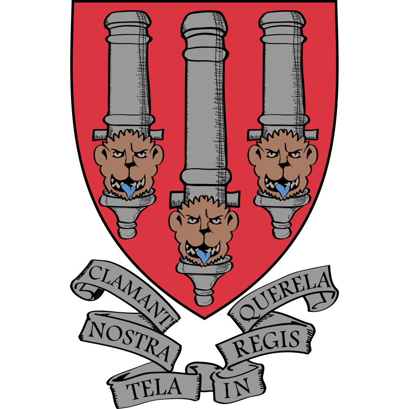

ตราสัญลักษณ์ ปี 1888
ตราสัญลักษณ์ที่ 1 ปี ค.ศ. 1888 : ทางสโมสรได้ทำการออกแบบตราสโมสรแรก ซึ่งรูปแบบก็ได้ลอกเลียนแบบมาจากตราของเมือง The Borough of Woolwich ซึ่งเป็นย่านที่เริ่มก่อตั้งทีม ก่อนจะย้ายมาอยู่กรุงลอนดอน จึงเป็นสาเหตุที่ทำให้ตราสโมสรนั้นคล้ายกับตราประจำเมืองของ วูลิช นั้นเอง ต่อมาได้มีการปรับเปลี่ยนตราสมโมสรใหม่ในปี 1913 เนื่องจากอันเดิมดันไปเหมือนตราของเมือง วูลิช ทำให้สโมสรมีความคิดเปลี่ยนแปลงตราสโมสรใหม่ แต่ก็ยังคงไว้ซึ่งเสา 3 ต้น ที่เปรียบเสมือนกระบอกปืนใหญ่ที่มีประวัติศาสตร์อันยาวนานทางการทหารของพื้นที่แทบ Borough of Woolwich นั้นเอง
ตราสัญลักษณ์ ปี 1913
ตราสัญลักษณ์ที่ 2 ปี ค.ศ. 1913 : อาร์เซนอล ได้มีการตราสโมสรใหม่ เนื่องจากอันเดิมดันไปเหมือนตราของเมือง วูลิช ทำให้สโมสรมีความคิดเปลี่ยนแปลงตราสโมสรใหม่ แต่ก็ยังคงไว้ซึ่งเสา 3 ต้น ที่เปรียบเสมือนกระบอกปืนใหญ่ที่มีประวัติศาสตร์อันยาวนานทางการทหารของพื้นที่แทบ Borough of Woolwich นั้นเอง
ตราสัญลักษณ์ ปี 1922
ตราสัญลักษณ์ที่ 3 ปี ค.ศ. 1922 : จากที่มีสัญลักษณ์ปืนใหญ่อยู่ 3 กระบอก เปลี่ยนมาเหลือเพียงแค่กระบอกเดียวเท่านั้น และดูเหมือนจะเป็นที่น่าภาคภูมิใจของชาว “วูลิชอาร์เซนอล” เป็นอย่างมาก แต่อย่างไรก็ตามด้วยทิศทางกระบอกปืนใหญ่ที่หันไปทางทิศตะวันออก หรือหันไปทางขวานั้นก็ถูกใช้อยู่เพียงแค่ 3 ฤดูกาลเท่านั้น และได้เกิดการเปลี่ยนแปลงของตราสโมสรอีกครั้ง
ตราสัญลักษณ์ ปี 1925
ตราสัญลักษณ์ที่ 4 ปี ค.ศ. 1925 : กระบอกปืนมีขนาดเล็กลง และหันปากกระบอกปืนไปทิศตะวันตก หรือทางด้านซ้าย สาเหตุที่กระบอกปืนเล็กลงนั้นไม่มีใครทราบว่าเป็นเพราะเหตุใด แต่มีการสันนิษฐานว่า น่าจะมาจากตราที่หน้าประตูของหน่วยหาญปืนใหญ่ที่เมือง วูลิช นั้นเอง โดยตราสโมสรอันนี้ถูกใช้ยาวนานถึง 17 ฤดูกาลเลยทีเดียว
ตราสัญลักษณ์ ปี 1949
ตราสัญลักษณ์ที่ 5 ปี ค.ศ. 1949 : มีการเปลี่ยนแปลงตราสัญลักษณ์ใหม่ และมีการเพิ่มข้อความลงในตราสัญลักษณ์ด้วย ซึ่งที่มาของข้อความนั้นก็มาจากความทรงจำบรรดาแฟนๆของ
อาร์เซนอล ในหนึ่งปีก่อนนั้นในวันสุดท้ายของฤดูกาล
1947-1948 เป็นวันที่ อาร์เซนอล คว้าแชมป์ลีกได้สำเร็จ ทำให้ แฮร์รี่ โฮมเมอร์ บรรณาธิการหนังสือโปรแกรมการแข่งขันของทีมในวันนั้นได้ให้คำนิยามสำหรับฤดูกาลที่ยิ่งใหญ่ของพวกเขาไว้ว่า “เราลองใช้ประโยคเป็นภาษาละตินดีไหม” จึงได้คำว่า Victoria Concordia Crescit ซึ่งมีความหมายว่า “ชัยชนะเกิดขึ้นจากความสามัคคี” ตราสโมสรใหม่จึงได้รวมประโยคภาษาละตินของ โฮมเมอร์ เอาไว้ด้วย และได้เปลี่ยนแปลงตัวหนังสือชื่อ Arsenal
อีกทั้งยังได้นำตราประจำเมือง อิสลิงตัน เข้าไว้ด้วย ซึ่งตราสัญลักษณ์นี้ถูกใช้ยาวนานถึง 53 ปี
ตราสัญลักษณ์ ปี 2001
ตราสัญลักษณ์ที่ 6 ปี ค.ศ. 2001 : ได้มีการทำตราสโมสรใหม่ให้เรียบร้อยขึ้น เนื่องจากเหตุผลทางด้านโฆษณาด้วย โดยการเปลี่ยนแปลงมาใช้สีเหลืองแทนสีทอง และตัวหนังสือก็ได้มีการเขียนให้อ่านง่ายขึ้นอีกด้วย ถึงกระนั้นการเปลี่ยนแปลงตราสโมสรนี้ก็ใช้ได้อยู่ไม่นานนัก เนื่องจากทางสโมสรไม่สามารถจดทะเบียนกับตราสโมสรนี้ได้ และ อีกหนึ่งสาเหตุก็มาจากการที่สโมสรมุ่งหวังที่จะก้าวเดินต่อไปข้างหน้าแบบไม่หยุดยั้ง
ตราสัญลักษณ์ ปี ปัจจุบัน
ตราสัญลักษณ์ที่ 7 ปี ค.ศ. 2002-ปัจจุบัน : เกิดการเปลี่ยนแปลงมากมายในช่วงการใช้ตราสโมสรนี้ อาทิเช่น การย้ายฐานมาสู่ เอมิเรตส์ สเตเดี้ยม และได้ออกไปเล่นรายการยุโรปมากขึ้น แม้ช่วงแรกตรานี้จะไม่ถูกใจแฟนบอลเท่าไหร่นัก แต่ก็ได้นำตราสโมสรนี้ออกมาใช้จนได้ แม้จะดูไม่มีมนต์คลังเหมือนกับของเดิม แต่ก็ดูมีเสน่ห์ และก็ได้รับการยอมรับจากแฟนบอลทั่วโลกมาจนถึงปัจจุบัน